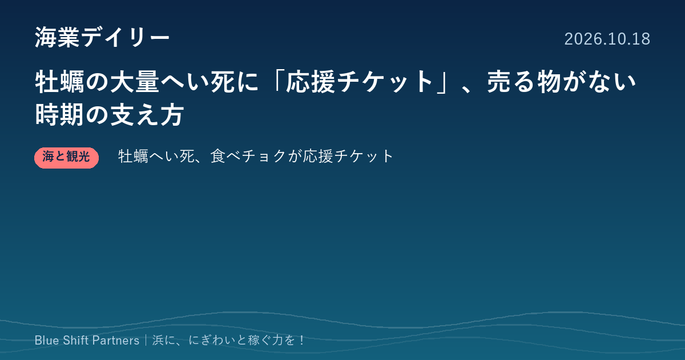

2026.10.18
牡蠣の大量へい死に「応援チケット」、売る物がない時期の支え方

本日は、2年続けて牡蠣の大量へい死に見舞われている生産者を、産直通販の仕組みで支える取り組みを1件お届けします。商品を届けられない時期に、どうやって浜とお客さまのつながりを保つかを考える材料になります。
食べチョク、牡蠣のへい死被害を受けた生産者向けに「応援チケット」の販売を開始
産直通販サイト「食べチョク」を運営する株式会社ビビッドガーデンは、2026年10月16日、牡蠣のへい死被害を受けた生産者を支える「応援チケット」の販売を始めたと発表しました。チケットは1口500円と5,000円の2種類で、商品の発送はありません。販売する商品がない生産者を優先して順次対象を広げ、同社の販売手数料は取らず、決済手数料（5%）を除いた額が生産者に支払われるとしています。あわせて、牡蠣を出品する生産者への緊急アンケートも行っています。
ここがポイント：不漁や災害で売る商品がない時期でも、ファンとのつながりを保ち、当座の資金を得る手段になります。漁協や浜の事業者が日ごろから直販の顧客と関係を築いておくことが、いざというときの備えになることを示す事例です。
出典：株式会社ビビッドガーデン（PR TIMES）「2年連続の大量死で牡蠣漁師が廃業危機。食べチョクが応援チケットの販売を開始」（2026-10-16）
牡蠣のへい死は原因がまだ分かっておらず、生産者の努力だけでは防ぎきれない被害です。売る物がない時期に支えてくれるのは、日ごろから顔の見える関係を築いてきたお客さまです。直販や体験で「浜のファン」を増やしておくことは、稼ぐ力だけでなく、浜の打たれ強さにもつながります。